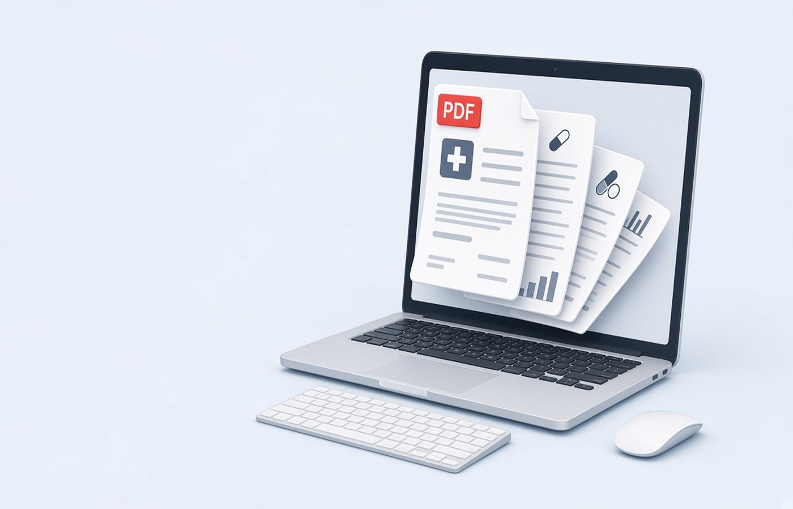

Health claims in India stall when the discharge summary, the final bill, the pharmacy slips, and the reports sit in four chats as photos. The insurer or TPA usually wants a PDF in a stated order, with the claim or admission number visible, and without last year's reports mixed in. On Windows you can turn those scans into pages, drop blanks, merge only what the form listed, and name the file so the helpdesk can find it. Use bills from the treatment you are claiming. Do not change amounts, dates, or hospital names on the scan. If a figure looks wrong, ask the hospital for a revised bill.
Collect pages in the order the form lists
Open the claim checklist and write the sequence, which is often discharge summary, final bill, payment receipt, reports, and pharmacy invoices. Sort your scans to that sequence before you merge. A beautiful single PDF in the wrong order still gets a query. If a report has two sides, keep the back immediately after the front. If a bill has a blank reverse, leave that reverse out so the reviewer does not think a page failed to scan. Page count should match the papers you mean to send, not every sheet the scanner pulled in.
Keep each hospital document type identifiable. If the TPA wants separate uploads, do not merge yet. Build one PDF per slot and name them. If the TPA wants one file, merge only after each piece is upright and readable. Add a simple first page only when they asked for a covering list. Otherwise the summary should be page one because that is what their checklist named first. Then count the pages against the list.
- Discharge summary before itemised bills, if that is the list order
- Payment receipts next to the bill they pay
- Pharmacy invoices for this admission only
- No reports from an older, unrelated visit
Turn ward photos into real pages
Photos taken in a corridor are skewed and grey. On the PC, crop to the paper, rotate until the print is upright, and export PDF pages. Read the patient name, the admission date, and the total. A thumb over the total is a reshoot, not a chance to type the total in a box. Stamps and signatures should remain visible. Do not raise contrast so far that a seal disappears. If the hospital gave a digital bill PDF, use that file instead of a photo of the printout. Digital pages stay sharp.
Split a long scan if it mixed two patients or two admissions. Claim files are personal. Another patient's page in your PDF is a serious mistake. Delete that page and rescan yours. If your own bill runs to many pages, keep them all if the checklist says the full bill. Do not drop the page that shows discounts or deposits. Reviewers compare the amount you claimed with the amount on that page.
Name the file with the claim clue
Use the patient name, the hospital short name, and the admission month, or the claim number once you have it. Example: Claim-Mehta-CityHospital-Sep2026.pdf. Avoid bill-final.pdf when the family has more than one claim in a year. If you must resubmit after a query, add a version and say in the mail which pages changed. Replace a blurry report. Do not reorder the whole story unless they asked for a new sequence.
Check the size cap on the TPA portal before you upload. Compress the merged PDF if needed, then reopen and read the bill total and the patient UHID or hospital number. Those identifiers are how the cashless or reimbursement desk matches you. A file that is small but unreadable will be queried, and you will rebuild it under a deadline. Keep the uncompressed copy at home until the claim is closed.
Store the pack until the claim ends
Insurers ask for the same PDF again when a query is raised weeks later. Keep a folder with the merged file, the separate originals, and the acknowledgement. Do not rely on the upload history in the portal alone. Pdf Buddy can merge the pages, rotate the sideways ones, and compress on your PC. The medical file does not need to sit on a random website that offers free joining. Upload only on the insurer or TPA channel named in your policy.
When the claim is paid or closed, keep the PDF with the year. Families often need the same papers for a second policy or for employer reimbursement. You are organising bills you received for care that happened. If a receipt is missing, ask the hospital billing desk for a duplicate. Do not recreate a bill in a writer to fill a gap in the pack. A duplicate from the billing desk is the right page.
Questions people actually ask
The TPA wants one PDF. Should I include old MRI plates from last year? Include only the documents this claim's checklist names for this admission. Old reports confuse the medical reviewer and add size. If a doctor letter says an older report is required, add that report as its own clearly labelled section, not as loose pages at the end.
A bill photo is dark. Can I type the total on the page? Reshoot or ask the hospital for a digital bill. The total must be the hospital's print, readable in the PDF. Typing a figure over a dark photo changes the document. Compress only after the printed numbers are already clear. Read the total before you upload.
Some pages are sideways after the merge. Will the portal mind? Yes. Rotate those pages upright and export again before you upload. Reviewers and their print queues assume portrait bills. A sideways total is a common reason a complete claim is marked unreadable. Fix it on the PC, then send the new file.
Build the insurance PDF on the PC and upload it on the insurer or TPA site. Pdf Buddy, by Easy Peeze Tools, is a Windows desktop PDF editor that works on the PC. Bills are not uploaded to a random website. The free tier is 2 files a day. Pricing starts at ₹149. Open pricing.